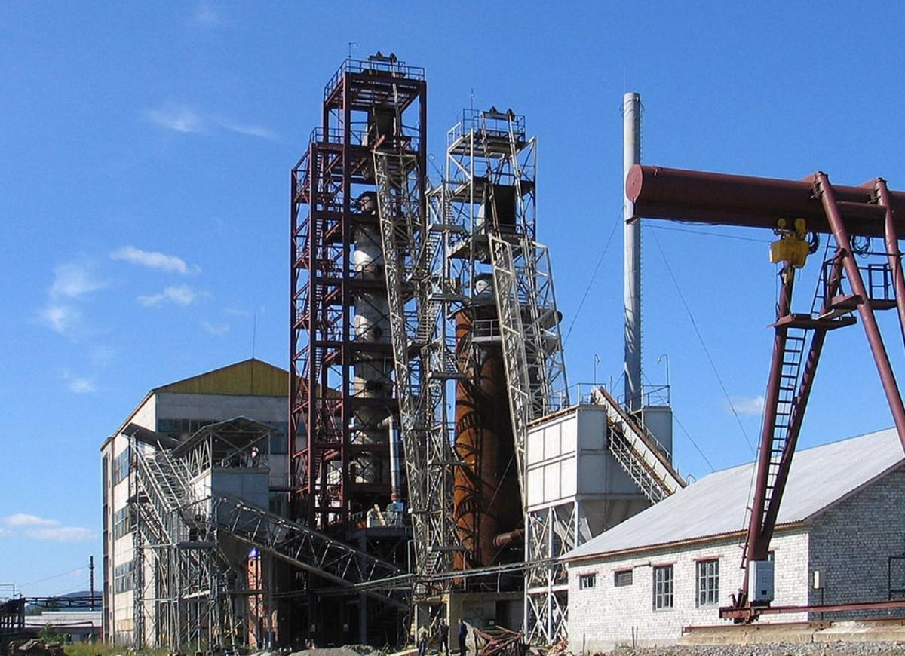
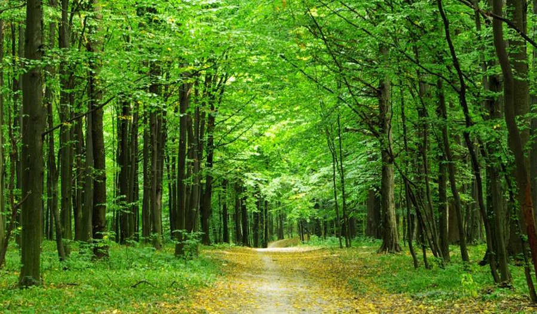

The Sustainable Development Goals of Perechin Timber and Chemical Plant
What's best for everyone is our customer-centric strategy, which will enable us to secure a more stable and sustainable future. It is focused on innovation of products and processes with the help of investments and support of relations with customers and partners.

Once again, our company has confirmed compliance with the requirements of ISO 9001:2015 during the successful completion of the 2nd surveillance audit. This proves that the quality of production and products at the company comes first.
Perechin Timber-Chemical Plant also passed a social audit for compliance with the BSCI (Business Social Compliance Initiative) Code of Conduct with the highest grade of "A". Compliance with the provisions of the BSCI Code of Conduct enables all our customers to be convinced once again of the good working conditions at our company, the social interests of our employees, our ethical behaviour and our respect for the environment. We implement and uphold these values by making a commitment to the team and community in the region.

Perechin Timber and Chemical Plant Looking to the Future: Switching to Alternative Energy Sources as a Way to Save the Planet
The world around us is charging at breakneck speed: technology is developing, new scientific discoveries are emerging, manufacturers are concluding that environmentally friendly production and a search of alternative energy sources are not just some “tricks”, an up-to-date tendency, or a strong stand of the owner, but a precondition for preserving the planet for future generations.
Global Society Already Switching to Alternative Energy Sources: Indeed, the Future Has Come! But What about Ukraine?

Environmentalists deny wastewater and air pollution by ALC "Perechin Timber & Chemical Plant"
At the numerous requests of the Perechin community in December 6 th, 2019 an independent laboratory of the Private Research and Development enterprise "Ecology" was invited to the city. It carried out air sampling to determine the concentration of pollutants in the surface layer of atmospheric air at 5 points in Perechin along the sanitary protection zone of the timber and chemical plant.
The conclusions are firm - no exceedance of the limit values at any point has been detected.

ALC “Perechin Timber and Chemical Plant” confirms its commitment to FSC principles and criteria
ALC “Perechin Timber and Chemical Plant” informs all stakeholders, including its partners about its intolerance to corruption, illegal deforestation, and all types of illegal actions related to logging.
FSC suggested that Perechin TCP should introduce additional control measures to restore certification, and to review its cooperation with other entities in the charcoal market.
Despite the long negotiation process, our Plant informed FSC that it is ready to sign a Memorandum of Understanding.